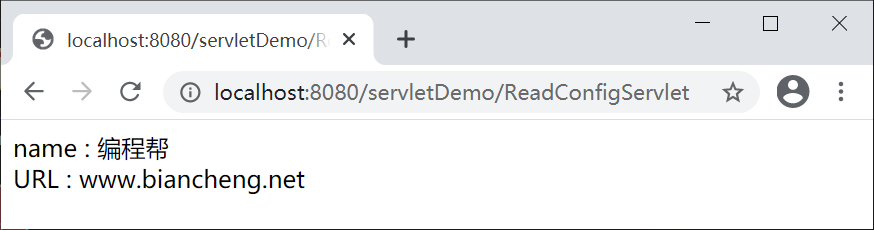

ServletConfig接口详解
Servlet 容器初始化 Servlet 时，会为这个 Servlet 创建一个 ServletConfig 对象，并将 ServletConfig 对象作为参数传递给 Servlet 。通过 ServletConfig 对象即可获得当前 Servlet 的初始化参数信息。
一个 Web 应用中可以存在多个 ServletConfig 对象，一个 Servlet 只能对应一个 ServletConfig 对象，即 Servlet 的初始化参数仅对当前 Servlet 有效。
以 servletDemo 工程为例，在 net.biancheng.www 包下，创建名称为 ReadConfigServlet 的类，代码如下。
启动 Tomcat 服务器，在地址栏输入“http://localhost:8080/servletDemo/ReadConfigServlet”，访问 ReadConfigServlet，结果如下图。
一个 Web 应用中可以存在多个 ServletConfig 对象，一个 Servlet 只能对应一个 ServletConfig 对象，即 Servlet 的初始化参数仅对当前 Servlet 有效。
获得 ServletConfig 对象
获得 ServletConfig 对象一般有 2 种方式：1. 直接从带参的 init() 方法中提取
public class ServletConfigDemo extends HttpServlet {
private ServletConfig servletConfig;
protected void doGet(HttpServletRequest request, HttpServletResponse response) throws ServletException, IOException {
//获取Servlet得名字
this.servletConfig.getServletName();
}
@Override
public void init(ServletConfig config) throws ServletException {
//从带参init方法中，提取ServletConfig对象
this.servletConfig = config;
}
}
2. 调用 GenericServlet 提供的 getServletConfig() 方法获得
//调用 GenericServlet 提供的 getServletConfig 方法获得 ServletConfig 对象 ServletConfig servletConfig = this.getServletConfig();
ServletConfig 接口
javax.servlet 包提供了一个 ServletConfig 接口，该接口中提供了以下方法。| 返回值类型 | 方法 | 功能描述 |
|---|---|---|
| String | getInitParameter(String name) | 根据初始化参数名 name，返回对应的初始化参数值。 |
| Enumeration<String> | getInitParameterNames() | 返回 Servlet 所有的初始化参数名的枚举集合，如果该 Servlet 没有初始化参数，则返回一个空的集合。 |
| ServletContext | getServletContext() | 返回一个代表当前 Web 应用的 ServletContext 对象。 |
| String | getServletName() | 返回 Servlet 的名字，即 web.xml 中 <servlet-name> 元素的值。 |
配置 Servlet 初始化参数
配置 Servlet 的初始化参数有 2 种方式：- 使用 web.xml 配置初始化参数；
- 使用 @WebServlet 配置初始化参数。
1.使用 web.xml 配置初始化参数
在 web.xml 中可以使用一个或多个 <init-param> 元素为 Servlet 配置初始化参数，代码如下。
<?xml version="1.0" encoding="UTF-8"?>
<web-app xmlns:xsi="http://www.w3.org/2001/XMLSchema-instance"
xmlns="http://xmlns.jcp.org/xml/ns/javaee"
xsi:schemaLocation="http://xmlns.jcp.org/xml/ns/javaee http://xmlns.jcp.org/xml/ns/javaee/web-app_4_0.xsd"
id="WebApp_ID" metadata-complete="false" version="4.0">
<servlet>
<servlet-name>MyServlet</servlet-name>
<servlet-class>net.biancheng.www.MyServlet</servlet-class>
<!-- Servlet 初始化参数 -->
<init-param>
<param-name>name</param-name>
<param-value>编程帮</param-value>
</init-param>
<!-- Servlet 初始化参数 -->
<init-param>
<param-name>URL</param-name>
<param-value>www.biancheng.net</param-value>
</init-param>
</servlet>
</web-app>
以上配置说明如下：
- <init-param> 元素是 <servlet> 的子元素， 需要在 <servlet> 元素内使用，表示只对当前 Servlet 有效 。
- <param-name> 子元素表示参数的名称。
- <param-value> 子元素表示参数的值。
2.使用 @WebServlet 配置初始化参数
通过 @WebServlet 的 initParams 属性也可以为 Servlet 设置初始化参数，代码如下。
package net.biancheng.www;
import javax.servlet.ServletException;
import javax.servlet.annotation.WebInitParam;
import javax.servlet.annotation.WebServlet;
import javax.servlet.http.HttpServlet;
import javax.servlet.http.HttpServletRequest;
import javax.servlet.http.HttpServletResponse;
import java.io.IOException;
@WebServlet(urlPatterns = {"/MyServlet"}, initParams = {@WebInitParam(name = "name", value = "编程帮"),
@WebInitParam(name = "URL", value = "www.biancheng.net")})
public class MyServlet extends HttpServlet {
private static final long serialVersionUID = 1L;
@Override
protected void doGet(HttpServletRequest req, HttpServletResponse resp) throws ServletException, IOException {
}
@Override
protected void doPost(HttpServletRequest req, HttpServletResponse resp) throws ServletException, IOException {
doGet(req, resp);
}
}
获取 Servlet 初始化参数
下面我们通过一个例子演示如何通过 ServletConfig 对象读取 Servlet 的初始化参数。以 servletDemo 工程为例，在 net.biancheng.www 包下，创建名称为 ReadConfigServlet 的类，代码如下。
package net.biancheng.www;
import java.io.IOException;
import java.io.PrintWriter;
import java.util.Enumeration;
import javax.servlet.ServletConfig;
import javax.servlet.ServletException;
import javax.servlet.annotation.WebInitParam;
import javax.servlet.annotation.WebServlet;
import javax.servlet.http.HttpServlet;
import javax.servlet.http.HttpServletRequest;
import javax.servlet.http.HttpServletResponse;
/**
*
* @author 编程帮 www.biancheng.net
* 获取Servlet的初始化参数
*
*/
@WebServlet(urlPatterns = { "/ReadConfigServlet" }, initParams = { @WebInitParam(name = "name", value = "编程帮"),
@WebInitParam(name = "URL", value = "www.biancheng.net") })
public class ReadConfigServlet extends HttpServlet {
private static final long serialVersionUID = 1L;
protected void doGet(HttpServletRequest request, HttpServletResponse response)
throws ServletException, IOException {
response.setContentType("text/html;charset=UTF-8");
PrintWriter writer = response.getWriter();
// 获取ServletConfig对象
ServletConfig config = getServletConfig();
// 获取servletName
String servletName = config.getServletName();
// 返回 servlet 的初始化参数的名称的集合
Enumeration<String> initParameterNames = config.getInitParameterNames();
// 遍历集合获取初始化参数名称
while (initParameterNames.hasMoreElements()) {
// 获取初始化参数名称
String initParamName = initParameterNames.nextElement();
// 获取相应的初始参数的值
String initParamValue = config.getInitParameter(initParamName);
// 向页面输出
writer.write(initParamName + " : " + initParamValue + "<br/>");
}
// 关闭流
writer.close();
}
protected void doPost(HttpServletRequest request, HttpServletResponse response)
throws ServletException, IOException {
doGet(request, response);
}
}
启动 Tomcat 服务器，在地址栏输入“http://localhost:8080/servletDemo/ReadConfigServlet”，访问 ReadConfigServlet，结果如下图。

关注公众号「站长严长生」，在手机上阅读所有教程，随时随地都能学习。内含一款搜索神器，免费下载全网书籍和视频。

微信扫码关注公众号